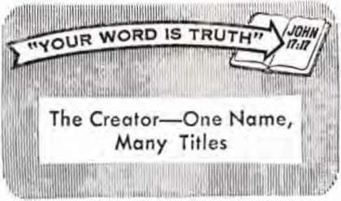

/..’•:pH0EN,x • ’ 4M

Court Asked to Safeguard Patients
Strengthening Your Marriage Ties
THE REASON FOR THIS MAGAZINE
News sources that are able to keep you awake to the vital issues of our times must be unfettered by censorship and seifish interests. "Awake!" has no fetters. It recognizes facts, faces facts, is free to publish facts. It is not bound by political ties; it is unhampered by traditional creeds. This magazine keeps itself free, that it may speak freely to you. But it does not abuse its freedom. It maintains integrity to truth.
The viewpoint of "Awake!" is not narrow, but is international. "Awake!" has its own correspondents in scores of nations. Its articles are read in many lands, in many languages, by millions of persons.
In every issue “Awake!" presents vital topics on which you should be informed. It features penetrating articles on social conditions and offers sound counsel for meeting the problems of everyday life. Current news from every continent passes in quick review. Attention is focused on activities in the fields of government and commerce about which you should know. Straightforward discussions of religious issues alert you to matters of vital concern. Customs and people in many lands, the marvels of creation, practical sciences and points of human interest are all embraced tn its coverage. "Awake!" provides wholesome, instructive reading for every member of the family.
"Awake!" pledges itself to righteous principles, to exposing hidden foes and subtle dangers, to championing freedom for all, Io comforting mourners and strengthening those disheartened by the failures of a delinquent world, reflecting sure hope for the establishment of God's righteous new order in this generation.
Get acquainted with "Awake!" Keep awake by reading "Awake!"
Ml — -ri—
Published Semimonthly by
WATCHTOWER BIBLE AND TRACT SOCIETY OF NEW YORK. INC. 117 Adams Slitet Brooklyn, N.Y. 11201, U.S.A.
N. H. Knorr, President Grant Suiter, Secretary
Average printing each issue: 4,550,000 Five cents a copy
U.S. subscription rates
•ffiscs for semimonthly editions
Aioarlia, U.S., 117 Adair« > flr-/’>?. N.Y. 11201 $1 Australia, 11 Bernard Road, tr .«.*■<!, N.S.W.
Canada, 150 Bridgeland Avenue, Toronto, Ontario 5J England, Watch Tower Boulevard
The Ridgeway. London N W 7 7/6
Nt« Zealand. 621 New North Road ' J <W 3 7 ••
South Africa. Private Bag 2, P.O. Box 2, Randburg, Transvaal, 705
(Monthly editions tost han the above rate) Remittances for subscriptions should be made to the branch office in your country. Otherwise eend yuur .-.;i . - to ILrooviyn.
Notice of n expiration la sent al -...4
lOeciiptlua expiration
Now published in 26 languages Semimonthly—Afrikaans, Cebuano. Danish, Dutch, English. Finnish, Ftench, (knran, Crerk, Iluko, Italian, Japanese. Korean, Norwegian, Portuguese, Spanish, Swedish, Tagalog. Zulu.
Monthly—Chinese. Chinyanja, Hiligaynon, Malagasy, Polish. Tamil. Ukrainian
|
CHANGES OF ADDRESS .houid |
reach ut thirty | |
|
before your moving date. Givi |
ee your old and |
new |
|
address (it possible, your old |
address label). |
Write |
|
Watchtower, 117 Adams Street 11201. U.S.A. |
Brooklyn. New |
York |
Second-class postage paid at Brooklyn, N.Y. Printed in U.S.A.
ike Bible translation uduhrly uud In Awake!" Is ths New World Translation of the Haly Serlpturet 1961 sdlflun When other translations are used. this Is clearly marked.
CONTENTS
Court Asked to Safeguard Patients
Letting Them Hear the Other Side
Strengthening Your Marriage Ties
“Your Word Is Truth”
The Creator—One Name, Many Titles 27
volume XLVIII Brooklyn, N.Y., September 22, 1867 Number 18
DO HOSPITAL patients have the right to choose the form of medical treatment they prefer? Or should they be forced to accept treatment that the doctors consider best? Should hospitals and doctors be able to invade the privacy of the family and obtain custody of a child by court order, so as to give it a blood transfusion over its parents’ objection? These questions that affect every one of us were argued before a three-judge United States District Court in Seattle, Washington, June 19-21, 1967.
What, in particular, led to this court case is the practice in Washington state of having children removed from the custody of parents who are Jehovah’s witnesses if the doctors feel that they might want to give the children blood transfusions. This invasion of the privacy of the family has become almost standard procedure. It is done under color of a Washington state law. Blood transfusions have also been forced on full-grown adults against their will under color of this law!
One case involved Shirley Chabot, who entered Saint Frances Xavier Cabrini Hospital in December 1964 for surgery to be performed by physician John Caputo. Mrs. Chabot had formerly been a nurse, and so objected to blood transfusions due to medical experience, as well as on religious grounds. She had a friend who contracted syphilis from blood transfusions, which
COURT RSKEO TO
disease resulted in breaking up her friend’s home and ruining her life. Shirley Chabot signed a document releasing Dr. Caputo and the hospital from any liability resulting from a failure to administer a blood transfusion, and the doctor agreed to perform a hysterectomy without the use of blood.
However, when Mrs. Chabot awoke from the anesthetic during the course of the operation she found that, contrary to their agreement, a blood transfusion was being administered! Dr. Caputo explained to her that this is often done to Jehovah’s witnesses without their knowledge. It makes one wonder just how sate it is to go to a hospital for treatment.
Complaint Filed
In order to obtain relief from such highhanded, dictatorial methods, and to stop the invasion of the privacy of their families, Jehovah’s witnesses, through their attorneys, filed a forty-seven-page complaint on November 12, 1965. The plaintiffs named therein include many individuals, such as Mrs. Chabot, whose freedom to choose medical treatment had been denied, also the Watch Tower Bible and Tract Society of Pennsylvania, the legal governing agency for Jehovah’s witnesses. But the action, too, is in behalf of the more than 8,900 witnesses of Jehovah in the state of Washington.
The action is against twenty-two individual physicians, ten hospitals, sixteen hospital executives, six judges, the attorney general, a probation officer and two lawyers, who have been directly involved in recent cases. In addition, the complaint seeks a permanent injunction against the entire medical profession and judicial system in Washington state, to restrain them from forcing blood transfusions upon Jehovah’s witnesses, in violation of their Constitutional rights.
Since the issues in this case are being faced in many other places, widespread interest and anticipation were raised in connection with the case. Finally, on Monday morning, June 19, the case opened in Seattle before Presiding Judge Lindberg and Judges Hambly and Beeks.
Vice-President Testifies
At 10:25 a.m., after nearly an hour of preliminary proceedings, the first witness, Fred W. Franz, was called to testify. He is the vice-president of the Watch Tower Bible and Tract Society. Under questioning by Witness lawyer Glen How, Mr. Franz explained the Scriptural views of Jehovah’s witnesses respecting the use of blood and the sacredness of the family circle.
In answer to the first question, Mr. Franz referred to Jesus Christ's quotation from Deuteronomy chapter six regarding the responsibility for one to love God with his whole heart, mind and soul. It is concerning these things, Mr. Franz explained, that fathers are commanded to teach their sons.—Matt. 22:37; Deut. 6:4-6.
This use of the Bible was noted to irk the battery of nine defense lawyers. They did not want God’s Word brought into the testimony!
Mr. Franz further explained that Jehovah's witnesses love their children and are commonly recognized as law-abiding citizens having well-trained and orderly children. They are also anxious to obtain good medical care for their children and themselves. They will not, however, go to the extent of disobeying God’s laws or principles to obtain relief from physical disabilities.
Under questioning by Glen How, Mr. Franz proceeded to draw attention to God’s law on blood, which was first given to Noah, and later to the Israelites. (Gen. 9:5; Lev. 17:14) It was pointed out that the blood law to which Jehovah’s Christian witnesses adhere was decreed by the council that the Roman Catholic Church looks upon as the first ecumenical council of the Christian church, namely, that held in Jerusalem around 49 of our Common Era. The decree issued there urged Christians "to abstain . . . from blood.'*—Acts 15:19, 20, 29.
It is the duty of the Witness parent to obey this Christian decree, Mr. Franz emphasized, even if it means disobeying the laws of the State.
At this point one of the judges asked the witness: "How far would one of Jehovah's witnesses go to avoid a transfusion if the court ordered one for a minor child?”
Mr. Franz replied: 'The father would resist the court order that places man's law above God's law, and would try to prevent the administration of such transfusion. I have in mind one case where the parents went so far as to whisk the child out of the country in order to avoid a governmental law involving their son. This is the case of Joseph and Mary, where they risked their lives to take their child to Egypt in order to elude the law of the king that had ordered the seizure of their child. That child was Jesus.’
At the citing of this Scriptural instance of parents defying the order of the government, Judge Lindberg was observed breaking out into a smile. But then he realized that this was not the occasion to indulge in such a thing, and he put his hand over his mouth and wiped the smile off his face.
Following a brief cross-examination by the defense, Mr. Franz stepped down after a full hour on the witness stand.
Testimony Reyarding Transfusion Risks
Next, four medical authorities were, in turn, called to the witness stand. These doctors provided testimony revealing the risk involved in taking blood transfusions, something generally not appreciated. It was also explained that alternative methods of treatment are safer, and may be equally as effective. The purpose of this testimony was to show that in no way could Jehovah’s witnesses’ choice of alternative forms of treatment be construed as parental neglect, hence justifying interference with their families by outside parties.
Called to the stand first was Dr. Gale Wilson. He was shown to be a doctor of local repute, having been in practice in the vicinity since 1928. He is not one of Jehovah’s witnesses.
For the past seventeen years Dr. Wilson has served as the chief pathologist and autopsy surgeon for the King County coroner's office, the county in which the city of Seattle is situated. In this capacity he sees a large number of corpses annually, and he explained to the judges that he sees, on the average, two or three deaths from blood transfusions every week, and “sometimes as many as two or three in a day!”
Dr. Wilson testified that the human body has its own means of compensating for blood loss, so that if the body is busy providing blood by natural means and you then proceed to put blood into the vascular system by artificial means through blood transfusions, the system begins working against itself. He compared it to revving the motor of a car and, at the same time, putting on the brakes.
If the body is putting blood into the system by natural means and the physician gives a blood transfusion, he said, the result is that the body cannot handle all the blood that is produced. The fluid is thus squeezed out into the lungs, and the person may die from pulmonary edema. Dr. Wilson noted that there is no certain way for a physician to know how much blood is needed. Therefore, physicians proceed with uncertainty, he said, and with much danger to the patient.
The doctor pointed out, however, that plasma volume expanders such as dextran will replace immediate blood loss more advantageously than the transfusion of whole blood. If the volume expander that is transfused turns out to be more than the body requires, it can be quickly excreted through the kidneys, he noted. However, whole blood cannot escape in this way.
Dr. Wilson also emphasized that one can never say whether a patient will live or die if he is not given a blood transfusion. Some patients, he said, who might have been expected to die were not given a transfusion and lived. On the other hand, patients that one would have expected to live were given blood transfusions and died. So, he concluded, there is simply no way of stating with certainty that blood transfusions are saving lives.
On the other hand, the judges were shown that it is definitely known that blood transfusions do kill thousands of persons annually. Dr. Wilson accepted as a reasonable statement that appearing in the widely accepted medical book Complications in Surgery and Their Management, edited by Doctors Curtis P. Artz and Janies D. Hardy (1960). In its chapter on blood transfusion it states: “The annual mortality from only three complications of blood transfusion, hemolytic reactions, overload and serum hepatitis, is computed to be 16,500 people.”
In cross-examination, Dr. Wilson was confronted with the statement in this book that said that in certain situations blood transfusions may be “mandatory.” However, Dr. Wilson said that he did not know of any such situations, and would disagree with the book to that extent.
The second doctor to testify, Lowell Dixon, is a practicing surgeon and resident physician at a hospital in Stockton, California. He related that over his past seventeen years of medical practice he has become convinced that blood transfusions are not only hazardous but of highly questionable benefit. Dr. Dixon told the court that he is of the opinion that from a medical standpoint there are no situations where blood transfusions are absolutely necessary. He explained that he has developed certain practices in surgical operations that make the use of blood unnecessary. Certainly the testimony of these medical authorities provided strong justification for choosing a form of treatment other than blood transfusion.
Use of Blood an Inexact Science
It was 4:11 p.m. when Dr. Dixon stepped down from the witness stand, and the next witness was called. This was Dr. Frederic Exner, a practicing physician in Seattle, who was formerly president of the King County Medical Association. He also has been an official member of blood bank committees in various hospitals, as well as having served for six years as professor of medical ethics at the University of Washington.
This doctor, with more than forty years of medical experience, proceeded to trace the history of blood transfusions. He explained that about three hundred years ago they tried to use animal blood in transfusions, but about a hundred years ago decided it advisable to use human blood. In the early use of blood transfusion, he observed, only about 55 percent of those given transfusions survived.
In time, blood typing was found to be necessary. However, even in recent years, Dr. Exner observed, it has been discovered that there are many more blood types than previously realized. The new discoveries, he said, demonstrate how wrong and incompetent the previous practice of blood transfusion was. Yet, he said, “they continue using blood on the theory that what you don't know can't hurt you.”
Dr. Exner explained that he had been seeing people killed by blood transfusions ever since his student days. He emphasized: "Nobody can say at any place or at any time that a patient who lived with a blood transfusion would not have lived without it.” Yet, he said, one can point to thousands of cases where blood transfusions have undoubtedly killed people. He concluded that, in weighing the use of blood, you have to weigh on one side the possible but unproved benefit to the patient, while on the other side there is the definite knowledge that blood transfusions can kill.
By now the afternoon was wearing on. However, before adjourning, the judges requested from Witness lawyer Glen How the assurance that he would complete the testimony of the side of Jehovah's witnesses by noon of the next day. Then court adjourned.
The Second Day
Some minutes before 10 a.m. the next morning court reopened, and Dr. Exner returned to the stand. He discussed the term “circulatory overload," explaining that in some cases a very small amount of blood may cause overload and seepage of blood into the lung. He also mentioned that, although figures indicate approximately 16,000 deaths annually from blood transfusion, there are undoubtedly many more that are never so reported.
In cross-examination by the defense attorney, Dr. Exner was confronted with a statement regarding medical ethics to the effect that a doctor should not consult with a dogmatist or a cultist practitioner. Dr. Exner said he did not object to the proposition. The defense counsel then asked him if, by accepting the views of Jehovah's witnesses against blood transfusion based on their religious views, he would not be violating his duty not to be influenced by any dogma.
The doctor turned the matter around. He pointed out that no one could prove that blood transfusions were lifesaving, therefore if a physician insisted that blood transfusions must be administered, then that physician was acting like a dogmatist. Thus, he is the one violating the fundamental principle of medical ethics.
The last medical authority to testify in behalf of Jehovah’s witnesses was Dr. Kenneth Riggle, a practicing surgeon from Houston, Texas. His testimony was similar to that of Dr. Dixon. He related to the court his successful practice of surgery of a wide variety without the use of blood transfusion. In particular he was questioned regarding the Rh incompa lability problem in infants. He told of treating four cases of this condition, two of which were extremely ill. Each of them recovered by employing treatment other than blood transfusions.
It became clear by the testimony of these medical witnesses that the use of blood transfusions is still far from an exact science and that there are definite risks. Furthermore, it was made evident that there are alternative methods of treatment that avoid the risks of blood transfusion and that these alternative methods are now being successfully employed by some doctors. Is it really parental neglect, or evidence of gross incompetence, to choose such alternative methods of treatment? Is it basis lor interfering in the family and forcing upon both children and adults unwanted medical treatment just because it is currently popular? These are questions the judges were to decide upon.
Witnesses Involved in Cases Testify
Next, Glen How proceeded to cal! to the stand a number of Jehovah's witnesses who had been involved in blood transfusion cases in the state of Washington. The defense counsel objected to this; nevertheless, the testimony of the witnesses was permitted by the judges.
Four cases were presented as examples. Two of them involved the seizing of children from the custody of their parents, and the other two concerned adults. The testimony of the witnesses revealed that officials had been arbitrary, getting court orders by telephone and acting without due process of law.
In the case of Geri Lynn Nichol the blood transfusion was given her even before the court order was sought! Mr. Nichol testified that he always feels some uneasiness about this child because he does not know what damage has been done to her by having the blood of a stranger flowing in her veins.
The next witness to testify was Evonne Sayers. She explained that she had recovered from the vaginal bleeding from which she had suffered, and her condition had stabilized. Then, after her husband left the hospital with the understanding that she was all right, she was rendered unconscious by drugs and given a blood transfusion!
The final witness was Martha Ridge. She testified that she was in the hospital at Enumclaw, Washington, suffering from uterine bleeding. She was not in serious condition at all, and had a good night's sleep. Then, she said, she awoke the nex morning to hear on the radio, to her complete surprise and embarrassment, that she had been taken into the custody of the court for the purpose of forcing upon her a blood transfusion!
The Defense
After reconvening in the afternoon, the defense counsel endeavored to cite examples to show that the Washington statute had been applied to others besides Jehovah’s witnesses. However, these instances were shown, on cross-examination, to be clearly those involving cruelty and actual neglect by parents, completely irrelevant to the cases involving Jehovah’s witnesses.
Then the defense placed then- medical witness on the stand, and the remainder of the afternoon was taken in direct examination of him. He was Dr. Warren Gun-theroth, associate professor of pediatrics at the University of Washington. This was one of the doctors who had been named as a defendant for his part in forcing blood transfusions upon Michael Penn, the child of one of Jehovah’s witnesses.
On the witness stand Dr. Guntheroth sought to vindicate his ignoring of the conscience and wishes of the boy’s parents, saying that he felt the boy would have died if he had not been given blood. Dr. Guntheroth testified that his conscience would not allow him to adhere to the wishes of the parents, but he felt justified under the law to force upon the children of Jehovah’s witnesses treatment that he felt best. He sought to minimize the risk of blood transfusion.
This witness then referred to Dr. Ben Wilson, who had written the chapter in the book edited by Artz and Hardy, which discussed the dangers and number of deaths attributed to blood transfusions. Jehovah’s witnesses had cited this information earlier in the trial. Dr. Guntheroth had written Dr. Wilson to have him enlarge on his opinions, and he sought to produce as evidence a letter from him. However, the court refused to admit the letter into evidence. It was held that what Dr. Wilson had written in the book was evidently his professional opinion, whereas what he wrote in the letter was designed to help out his friends, and was not so likely to be an honest statement of his medical opinion.
Court was adjourned at 4:35 p.m., with Dr. Guntheroth still on the witness stand.
The Final Day
On the final day of the trial Glen How took up the cross-examination of Dr. Guntheroth. Mr. How confronted the witness with the writings of doctors at Baylor University, Houston, Texas, who have been successfully handling cases of Jehovah’s witnesses in open-heart surgery without the use of blood. Nevertheless, Dr. Guntheroth again held that his conscience would not allow him to proceed without using blood or having it at hand.
Since he had introduced the matter of conscience in such decisions, Mr. How now asked the doctor whether he would be guided by his conscience in a case where an abortion was necessary to save the life of an underage Catholic girl, whose religion forbids abortion. This question, however, was objected to by the defendants.
After about thirty minutes of cross-examination, the witness was dismissed and preparations were made for the final arguments by the attorneys. The defense had supplied only one real witness and very little substantial evidence. Apparently they were counting upon popular opinion to exonerate their actions as ‘lifesaving measures,’ thus making unnecessary any real effort to defend themselves against the charges of interfering with the Constitutional rights of citizens.
Concluding Arguments
At about 10:30 a.m. the final arguments began. The attorneys for the plaintiffs explained that Jehovah's witnesses were not seeking any financial damages. Rather, they were seeking an injunction on the ground that the State statute is unconstitutional, or was being applied unconstitutionally. They were seeking relief, not merely from isolated acts, but against a practice. Glen How, who took the lead in the case for the plaintiffs, made clear that Jehovah’s witnesses desire total relief against all judges, doctors, hospitals and anyone else who would interfere with their God-given, Constitutionally protected right to manage the affairs of their personal and family lives.
It is the duty of the father to decide what is for the benefit of his family, Mr. How explained, and this is a discretion that the law places upon him. He further pointed out that the judges in these cases have been proceeding on the wrong basis. It is not their place to sit as the father of the family, How noted, and decide what they would do in the same situation. The family circle is protected by the law, and before the judge can even enter or inquire what is going on in the family circle there must be evidence of neglect of the family by abandonment of parental discretion.
Lawyer How went on to show that Jehovah’s witnesses are not neglecting their children by forbidding blood transfusions to be given them. Rather, they are merely exercising their right of parental discretion regarding medical treatment of their children and themselves as adults. They are doing this in an area of medical practice where there are real and well-known dangers and where there is also in common use successful alternative treatment.
Mr. How further explained that this position of Jehovah’s witnesses is, therefore, not only a religious one based on very clear statements in the Bible, but also a medically sound position based on an increasing volume of statements by recognized authorities in the medical literature of the last twenty years or so.
It was submitted by Mr. How that the free exercise of religion guaranteed under the First Amendment of the United States Constitution includes the right of training and upbringing of children in the religious views, opinions and practices of the parents. It was also pointed out that the refusal to submit to blood transfusions poses no potential danger to the public, and therefore it is not a matter of public law that would justify any invasion of the individual citizen's rights.
In conclusion, he pointed out that the defense's admission that the judges were merely following the opinions and views of the doctors put the doctors in a position of privilege above every other person in the United States. They are, in effect, judges in their own case. The Constitution of the United States, however, provides that there shall be no such thing as a “Title of Nobility." He also noted that the exalting of a medical doctor’s conscience over the conscience of a patient was an establishment of religion, a thing that is against the First Amendment of the Constitution.
The matter is now before the court to decide. Will the judges, in accord with Constitutional guarantees, safeguard the rights of hospital patients? Awake! will report on the outcome when the decision is handed down.
SURING the month of April this year thousands of educators throughout the United States were furnished with a copy of Awake! of April 22, highlighting the theme “Evolution or Creation by God—Which?" Many teachers and professors hailed this compact discussion of evolution in relation to a Bible-based faith as filling a long-felt need in classrooms. Here are some of the responses.
Said a science teacher In Montana: “What is a teacher to do when evolution theory is taught right in the textbook? What you people are doing is exactly what is needed to give the students the other side of the question."
“I see a real need for my students to understand what evolution is all about, and so I teach about the theory. At the same time I want them to realize that it is only a theory —and perhaps a very poor one at that," wrote a Texas teacher, with his request for thirty five extra copies of Awake!
And an Illinois teacher wrote: "I read the magazine, which 1 enjoyed, and found it very informative. It was strange that I had just previously mentioned in class how wonderful that a spider knew how to spin an intricate '-•’b, and that God had to have something to do with it. Next day your daughter handed me Awake!, and there was the article mentioning the spider and its web.”
A Catholic teacher in Detroit exclaimed; "You know, I never thought of evolution as having destroyed people's belief in God. Something is the cause; tire young people are leaving the Church in droves."
At Fresno State College, California, it is reported that a professor of physics, who is also a graduate of the California Institute of Technology, is “In essence” sympathetic with what appeared in Awake! He is quoted
as saying: “Most intellectuals ignore the W Bible and in effect merely say that ‘I accept (j* all evidences except those which do not appeal y to me, mainly that described in the Bible.' " He also pointed out that many findings by *!' scientists are based on assumptions, not facts. A A department head in a Virginia high school reacted this way: “Although I am certain w) you will meet with opposition. I for one am 0 glad to see a stand taken, of importance, on
an important issue. So much is related to science today, in so many fields of study, that to forget the Creator for the sake of X scientific 'fact' is not difficult to drift into.” After reading what Awake! had to say i) about evolution, one Vermont teacher of science typed and mimeographed copies so A he could pass them out to his various classes, (f He expressed appreciation for information supporting belief in creation, because all he. x could find heretofore was information sup
porting evolution. He wants his students to A hear both sides of the question and make A up their own minds,
Ci This excerpt from a letter of a science teacher in Michigan speaks for itself: “We v desire to present our biology students with T different opinions on evolution. Your publi-Z cation [Awake!] presents a discussion of some A of the aspects. We are interested in knowing
the cost of 250 copies. We would also like to A know if your organization has any person available to talk to our biology classes about lj) evolution.”
if And from a college in Iowa comes this 2 expression from a senior student: “Since I k do plan to go into the field of biology and h secondary education, I know that the articles A in your April 22 issue of Awake! will help me 3 explain to my future students in a clear and A informed way the Christian view of evolution."
With an order for extra copies of Awake! If came this interesting expression from south- k) eastern New York State: “I have been working (? hard on the problem of evolution for several T years and have reached pretty much the same x conclusion as you have, I have written an article or two on the subject, and am there-(ore familiar with the problem of presenting the arguments simply and convincingly. You v have done this very well. You quote reputable authors and you have selected the passages k'j very intelligently. In short, you have done a highly professional job."
A correspondent in Oregon wrote the pub- r Ushers of Awake!: "While I am not a member of Jehovah’s witnesses... I wish to take this opportunity to express how very much I have enjoyed your Awake! magazine.... It came at & an opportune time, just when I had completed 4 a number of articles on evolution, and had C' been half-swayed on this subject toward evolution. I am now thoroughly convinced how utterly impossible for life, in its multiple and varied forms, minute and large, ugly and v beautiful, to just have happened billions of years ago, by itself. I wish to express my A admiration for the wonderful work you are doing in different lands, to inspire true belief in our Creator, and I no longer want any part k, of evolution.” (f
Another teacher in northeastern Alontana K’ wrote to say that Awake! arrived "just at the right time to be studied with our other V material in the biology course ... and I intend to study it at least as carefully as our text. J To those of us who believe in God’s creation it is heartening to have at hand some facts as well as faith. Not that there is anything wrong with holding true on just faith; evolutionists go that far and farther themselves in asking one to blindly accept a theory as fact, in spite of all its holes."
Having read this outstanding issue of Awake!, an English teacher in a Florida high school found the arguments to be so logical that he plans to use Awake! in the classroom to demonstrate good argumentation.
In a Catholic high school in Ohio a priest, who conducts a class in Bible study, stated that they were presently studying Genesis and felt that the presentation of Awake! would be helpful. He requested thirty copies, one for each student in his class.
A teacher in a Harlem (New York city* school invited the young student who brought the the Awake! magazine to give a brief resumd of its contents before the whole class At the conclusion she said to the girl: "I was always undecided about evolution, but what you have said about it here in class today will help me to make my decision.”
How strange that a mere theory should be taught in school as though it were as demonstrably true as arithm- tic! Nor have the voices of Christendom's clergy been raised in strong protest against a course of study that undermines youthful faith in God, Surely it is time to let the students hear the other side of the evolution question!
BIRDS NAVIGATE BY THE STARS
Animals cannot learn or figure out complex problems of navigation, since they no not have the power to reason as man does. Yet they can navigate by the stars.' "he book The Vysterious Senses of Animals notes the results of experiments in (his regard "These experiments made it clear that blackcaps instinctively recognised individual constellations, 'knew' that they travelled across the sky during the night and also ‘knew’ the ■ hanges of the constellations with the changing seasons. . . . These small feathered astronomers can still navigate if only one or two stars are visible through the cloud cover. But if the sky is totally overcast, . . . they simply interrupt their migration . . . How do they acquire their extraordinary' astronomical capacity? . . . the blackcap has inherited Its knowledge of celestial geography and the course of the stars. Science still has no explanation to offer of how this instinctive knowledge of a subject as complicated as that of the constellations came to be embedded in an animal’s germ plasm."
While scientists may not have an explanation, the Bible does. The wisdom everywhere manifested in living things, such as the amazing navigation instinct of birds, testifies to the fact that they were designed by an intelligent Creator, Jehovah God.
Failure in marriage is a growing phenomenon. How can you be sure that your I marriage will be successful and happy?
GENERALLY on their wedding day couples are optimistic. The ties that hold them together seem strong. They look forward to a successful, happy relationship. But then, so often, they drift apart. Why? Why is unhappiness so prevalent? Where does the trouble begin?
This is usually difficult to pinpoint. A combination of factors almost invariably is involved. A typical example that will help to illustrate is that of a young married couple in New York city.
She was a strikingly attractive woman in her late twenties. He was three years older, and was intelligent and alert. He owned a small business and earned a comfortable living. They had two young children, a boy and a girl. Although each admittedly loved the other and their children, the ties holding them together were becoming dangerously strained.
He observes: “It is a little difficult to describe the cause of our troubles. I guess the underlying reason, though, was selfishness and resentment. 1 was so wrapped up in my business and personal pleasures
12
(I liked to bowl and gamble) that I was not giving my wife the attention I should have. She responded by adopting the attitude that, if that was the way I was going to be, she wouldn’t give me any attention either. As a result, the pattern developed of my wife’s going her way and doing what she liked, and my going my way and doing what I liked.
“I suppose that inwardly we both resented that our mate found happiness (or, at least, we thought found happiness) in pursuits and pleasures without the other’s company. Eventually we were purposely making an effort to ignore each other, and to plan activities in which the other could not share. Although this course brought neither of us genuine happiness, we wanted to prove to the other we could be happy without our mate. I guess it was a way of getting even. But you can imagine the strained relations this caused in the home."
Soon the situation deteriorated so much that each would deliberately say and do things to hurt the other. Name-calling and shouting became frequent occurrences. The atmosphere around the home was tense and unhappy. They were on the very verge of separation and divorce. They were sailing the same course to marital shipwreck that millions of families in recent years have sailed.
A Growing Problem
One does not need to be a sociologist to know that the weakening and severing of marriage ties is a growing phenomenon. Every year, in the United States, while about 1,700,000 couples are married, more than 400,000 marriages arc dissolved. Thus, for about every four marriages, one is broken. In many countries divorce rates are rising even faster than in the United States.
Yet the number of divorces only par-
AWAKE! tially reveals the true marital picture. For each marriage that ends in divorce, explains a doctor who specializes in marriage counseling, there are many in which "the family unit remains together physically, but there is, in effect, an emotional divorce." Some refer to these unhappy unions as "empty shell” marriages.
In one study of 4,000 marriages, conducted by a Dr, Paolo Bellinato, only 30 percent of the couples said they were reasonably happy. Another 40 percent were trying to keep up appearances, but actually their marriage ties were weakened seriously, and prospects for the future were very bad. The remaining 30 percent no longer even attempted to keep up appearances and flouted all ethical and moral standards. The situation perhaps is even worse than indicated by the statistics, since people, when being polled, tend to be optimistic. There is no question that most marriage ties need strengthening. But how can this be accomplished?
True Guidance and Counsel
Happily, the New York City couple discovered how to mend the emotional rift that threatened their marriage. One day the husband was at his place of business when he was visited by a minister, one of Jehovah's witnesses. The visitor pointed him to the Bible, and invited him to a regular study of it. The husband accepted, and each morning set aside an hour from his work for this consideration of God’s Word.
Soon the man began to have a clearer appreciation of the marriage relationship. Never before had he read right out of the Bible what God expected of Christian husbands. He could see where he had fallen short of his family responsibilities, and determined to follow the Bible's guidance and counsel.
After a couple of months he invited the minister to his home so that his wife might join in the study. At first, however, she was not so inclined. But noting what a fine change had come over her husband since he began studying the Bible, she eventually consented. Gradually she, too, began to appreciate the Bible’s counsel on proper conduct and a Christian wife’s responsibilities. As a result, the marriage ties progressively became stronger. Now, years later, acquaintances have told them: "We have never seen two people so genuinely happy together."
The vital factor was that each of them developed a genuine love for the Creator and his laws. Their efforts to cultivate the fruits of his holy spirit—including love, peace, mildness, kindness, self-control— drew them close together. (Gal. 5:22, 23) They realized that real happiness could be enjoyed only by considering the other’s interests and working out their problems together in a spirit of love. Thus, they began to realize the wonderful joys of God's divine arrangement of marriage.
The wife observes that she sometimes thinks back to how close she and her husband were to divorce. “I must sit down and sob,” she says, “when I consider the possibility that I might have lived separate from my husband all these years. Then I pray to Jehovah God and thank him for His counsel and guidance that brought us together in such a happy relationship.” The Bible truly has power to strengthen marriage ties!
Problems the Bible Solves
Holding a grudge and withholding forgiveness are also major factors in many marital troubles. An outstanding example is that of an African man who, for twenty-two years, refused to eat food prepared by his wife because she once committed an act of immorality, Children were born and raised in this troubled atmosphere. Friends, relatives and clergymen had tried to change the man’s attitude, but without success. Could God’s Word solve this marriage problem?
One day one of Jehovah's witnesses, in his regular preaching work, called upon the man. When the problem became known, the Witness on several successive visits explained to the man that Christians should forgive one another as Jesus instructed. The Bible’s counsel on the proper relationship between husbands and wives was discussed, and it was pointed out that a change of personality was necessary to conform to the Bible’s high standards.
The man was favorably disposed toward the Bible message, and began to reason to himself: “Well, I have wanted to preach love to others while I myself have not shown this quality.” Convinced, he decided to put an end to his unforgiving attitude and began to eat food prepared by his wife. He invited the Witness and a neighbor for dinner and proudly announced that his wife had prepared the meal. The wife, for her part, greatly rejoiced at this change of heart, and has since decided to follow her husband's example of Bible study. It is God’s Word that has brought the happiness that this household now realizes!
Angry tempers and lack of self-control are other factors that cause serious strains on marriage ties. However, that a change can quickly be realized when Bible counsel is applied is observed from the expressions of one wife last year. After only a few Bible studies, she told the Witness studying with the family:
“I thank Jehovah God for his goodness, because Bible truth has made a big change in this house. My husband shows me much consideration now; he no longer beats me but spends time associating with me. Even the children have changed; they have become honest and obedient. I, too, have understood my place in the home as a wife and homemaker.”
It is of particular interest that one of the children should also tell the Witness: “Sir, since you helped us consider the scripture at Colossians 3:18-21, our parents do not fight anymore. They are showing us affection and are teaching us good things. We are now obeying them and we are all very happy.” Yes, when God’s Word is taken seriously and followed, the whole family benefits!
Power to Reunite Separated Families
Even when marriage ties have been strained to the breaking point and husband and wife have separated, the Bible has the power to reunite them in a happy union. For example, not long ago a woman in Indonesia who had left her husband took the initiative and returned to her village to arrange a reconciliation after studying the Bible with Jehovah's witnesses. The husband was happy to receive back his estranged wife, and the villagers were simply amazed that God's "Word could have such a beneficial effect!
In another instance, a young man traveled from Spain to Venezuela for the purpose of trying to reunite his parents, who had been separated for four years due to marriage disagreements. After a while he abandoned all efforts to effect such a reconciliation as hopeless. However, later, this young man was contacted by Jehovah’s witnesses and became a serious Bible student. The suggestion was made by a Witness that he visit his parents and see if the information from God's Word would not effect a change of heart in them. He decided to try.
Happily, the Bible had positive results from the beginning. The mother noted the change in her boy and very much liked the way he acted now. Due to this she was ready to listen to his counsel based on what he had learned from the Scriptures. So, by witnessing to his mother and to his father, the boy was able to unite them again. They all started to live together, and the parents progressed in appreciation of God's Word to the point that they dedicated their lives to Jehovah God and symbolized this by water baptism. They regularly give thanks to God for uniting their family in true love.
.4 lltse Course to Take
Is it not the wise thing to inquire of the maker or designer of an instrument as to how it should lx1 operated? Yes, for he would logically be the one to give you the best and wisest instructions. He is familiar with the product, and knows its limitations.
Similarly, is it not only reasonable that married people should seek guidance and counsel from the originator of marriage, Jehovah God? Really, it is! The avalanche of broken homes and marital unhappiness in recent years is due to the failure of persons to do this very thing. The belief has become common that the Bible is old-fashioned. out-of-date and impractical for our day. But this is not true. It is the only sure guide to successful marriage. Following its instructions is certain to strengthen your marriage ties.
In April of 1965 a young Pennsylvania couple took a very wise course. They were having serious marriage problems, and intended to seek a divorce. However, before going through with it, they wanted to know what the Bible had to say on the subject. But how could they find out? They had heard that no people were more familiar with the Bible and its teachings than Jehovah's witnesses. So one Saturday afternoon they called the telephone number listed for Jehovah's witnesses in the phone directory.
A local minister answered and, after listening to their problems, he told them that he would gladly consider with them what the Bible had to say on the subject Of course, then they themselves would have 1o decide whether they would allow God’s counsel to govern their lives. The next day the minister of Jehovah’s witnesses called, and some two and a half hours were spent examining the Bible texts. The information from God's Word greatly impressed the couple. So they agreed to a regular study of the Bible in order to become more familiar with Scriptural principles and God’s purposes.
Miraculous changes were not realized overnight. The problems were serious. Yet, because of respect for God, the two continued to study. In time, they made adjustments in their lives in accordance with Bible principles, and progress toward better marriage relations was realized. Now, after more than two years, the marriage ties that were all but broken are greatly strengthened. The couple are indeed happy that they are still together and have come to such a wonderful appreciation of their loving Creator.
You, too, can greatly benefit by applying the divine counsel and guidance of God's Word in your life. Do not ignore it; it can truly strengthen marriage ties! Jehovah's witnesses in your community will be happy to help you locate within its pages the grand counsel that will lead to a successful and happy marriage.
DECEPTION
AND
FRAUD
-i
A T PERHAPS no other period in his-21. tory has the ancient maxim been more apropos: Let the buyer beware! And perhaps, too, never has the advice been more vital: Investigate before you invest.
Sociologists estimate that probably one out of every ten American adults in the nineteenth century was a victim of a swindle or fraud sometime during his lifetime. Yet, in the twentieth century, just last year, a writer observed: "Today, ten out of ten adult Americans are the victims of swindles and frauds . . . Never before in the history of the United States have so many been swindled so often in so many different ways out of so much."
At practically every turn there are deceptive and dishonest attempts made to separate you from your money. According to reports of the United States Federal Bureau of Investigation, losses due to fraud are estimated to be at least three times greater than the losses from all robberies, burglaries, car thefts and bank holdups combined.
Misleading Advertising
One of the first steps toward protecting yourself from fraud is to maintain a healthy skepticism of modern-day advertising. For while advertising can serve beneficially to educate you about products that are available, it can also be mislead-i ng and, at times, outright fraudulent.
A prominent example, that caused overweight Americans to spend some $16,000,-000 between 1956 and 1963, was the massive advertising campaign for Regimen tablets. Television viewers were shown two overweight women. Then, after having taken Regimen tablets for several days, the women were seen again, now much slimmer, even though it was claimed they had not dieted. Investigations revealed, however, that they had crash-dieted away the pounds, and that the tablets were not responsible for their weight loss. On May 6, 1965, a federal grand jury found the advertising agency and drug firm guilty of conspiring to defraud the public, and fines amounting to over $100,000 were levied against them.
While perhaps few advertisements are so boldly dishonest, nevertheless, there are others designed to mislead. Advertising men themselves have been polled on the subject, and in a survey of admen published in Advertising Age only 8 percent of those responding considered their fellow admen to be "honest.” Misleading advertising can, indeed, be instrumental in defrauding you.
Row Advertisements Can Mislead
Consumer Bulletin of April 1964 warned about being misled by deceptive advertising, saying: "Several big-city newspapers run pages of such advertising, particularly during certain months of the year, and these ads all too commonly offer misrepresented articles or articles of little or no value which are portrayed as great bargains." So while there are, on occasions, legitimate bargains to be had, there is a vital need to be alert so as to avoid being cheated.
One deceptive practice is to put in bold lettering the name of a prominent musician on a record album jacket, but elsewhere in small type reveal that someone else does the recording. Somewhat similar is the practice of advertising an item as free, or at an unbelievably low price, but, then, in very small type, explaining that the item is available only with the purchase of something else. This fact, however, may not come to one’s attention until, in response to the ad, one seeks to obtain the item.
A prominent example that resembles this deception occurred about three years ago. A popular magazine carried an inserted tire company advertising card called a “lucky claim check.” The ad suggested that, as far as the number was concerned, each card was unique. And if you were “lucky" and received one of the “winning numbers,” published on another page of the magazine, you were instructed to proceed to the nearest of their auto accessory dealers and collect your prize, which included various items of merchandise such as sets of tires, bicycles and power lawn mowers, as well as discount booklets.
When many of the some four million readers of the magazine began showing up with their number cards, it was obvious that each “lucky claim check" was not unique. As it turned out, there were only 1,165 merchandise prizes; the other nearly four million “lucky” winners received discount booklets that entitled them to a saving of from $1 to $2.50 on each purchase of certain of the store’s goods and services. As Consumer Reports observed: “Naturally, rather a lot of ‘winners' felt they had been duped into becoming traffic.”
A similar deceptive practice used by some firms is to advertise an appealing “bargain,” and then when a person responds, switch his interest to another- item. In one way or another the salesman downgrades the advertised “bargain," perhaps by pointing out its obviously poor quality. Then he interests the customer in merchandise of better quality, and may recommend that the money intended for* buying the “bargain” be placed as a down payment on it. However, the better merchandise is also generally greatly overpriced. The advertisement was all part of a scheme to get the customer into the store, and to set him up for a sale.
Closely related to this kind of advertising is that sometimes employed by department stores. They may offer suits or dresses at bargain prices—not mentioning that they are only in off sizes. Many businesses do not hesitate to stoop to such devious methods to get people to their stores. Less reputable firms have been known to advertise a “bargain," but when customers arrive, they are invariably sold out of it. Actually, they never had such a bargain, for persons that arrived even before the store opened found it to be “all out" of the advertised item! To avoid being cheated, you must beware of such deceptive practices.
Work-at-Home Schemes
Often persons confined for the most part to the home—such as housewives, the aged and cripples—are enticed by advertisements that offer them the opportunity to earn money by doing “part time" work at home. The one thing these “earnmoney-at-home” promotions have in common is that they require the prospect to buy something from the advertiser.
For example, one advertisement invites: “WOMEN: — $100 monthly for doing assembly work at home." The ad indicates that the purchaser will be paid for doing the work. But this is really not the case, for it is up to the women to sell the items after they buy instructions and materials from the promoter.
Another advertisement similar to the above offers: "MAKE MONEY in the quiet of your home. Large profits assured, market for all your produce." Unwary women purchase materials and patterns with the understanding that the company is going to buy the finished product. However, the company only agrees to buy work that is “up to their standards." But none ever is, no matter how well done.
There is an endless number of variations to this scheme. The work offered may be writing songs, raising mushrooms, breeding chinchillas, stringing beads; promoters have tried practically everything. But, remember, it is the victim that invariably pays for something; not the promoter. He is the one who actually rakes in the profits.
Mail Fraud Is Widespread
Use of the mail for the purpose of defrauding people, such as in the above schemes, is a serious problem. Observed Chief U.S. Postal Inspector Henry B. Montague: “Over $100,000,000 is being stolen from the public each year in mail frauds alone—and that’s a conservative estimate. We’re hearing more complaints and making more arrests now than at any other time in history.”
One form of this fraud is the mailorder sale of worthless land. Swindlers have, in recent years, peddled misrepresented homesites to thousands of unwary victims—not only in the United States, but in Panama, Costa Rica and Brazil. Usually the resulting heartache is due to failure to heed the important advice: Investigate before you invest.
Sometimes illegitimate operators will send a congratulatory letter or postcard telling you that you have won a free piece of land as part of the company’s advertising campaign. However, it turns out that there is a small charge, described, perhaps, as "closing costs.” These may run up to $250 or more. Thus, the land is not really free, and an inspection of it reveals the land to be practically worthless—being located on an inaccessible hill or in a swamp.
Almost invariably swindlers entice victims by offering an item or service “free,” or at an unbelievably low price. For another example, a spurious company may send a letter telling new parents: “Your baby is about to receive a $500 gift, absolutely free." The letter explains that an unidentified philanthropist, childless and wealthy, is making the gift. “You know the type we mean," the letter continues convincingly. “This is his way of showing his love for all children ... by selecting a few . . . luckily, your infant ...”
However, then follows the bid for your money: Five dollars is required to cover “transfer fees.” since the five hundred dollars is part of a trust fund that must be legally separated. Of course, the whole scheme is to swindle five dollars from an unwary prospect. And so often schemes such as this succeed! Swindlers tell people what they want to believe—that they can receive something for nothing, or practically nothing—and many persons are taken in by it. But do not let this happen to you. Remember the sound counsel, never to invest until you have investigated.
What About Charities?
The above advice should also be applied when considering a contribution to some form of charity. Requests for money are becoming ever more urgent, and from an increasing number of sources. In the United States a fantastic army of 32,000,000 volunteer workers did the collecting for some thirty-five national philanthropic agencies in a recent year. And in 1964 Americans contributed some eleven thousand million dollars to charity, compared to about half that amount ten years before.
However, the important question is: How much of the eleven thousand million dollars was used for the purpose for which the contributors intended it? According to a New York Times estimate, some $300 million is believed to have gone to charities that were partly if not wholly fraudulent. But even of contributions made to what are considered legitimate charities, a large percent regularly goes to cover costs such as advertising, salaries, rent, special promotions, and so forth. Sometimes little is left over for the purpose for which contributors gave their money.
For example, during a two-year period one veteran organization collected $2,100,000, but $1,900,000 of it went for fundraising costs. Minnesota Attorney-General Walter Mondale charged that of $30,576,000 contributed to the Sister Elizabeth Kenny Polio Foundation from 1952 to 1959, over $16,000,000, or some 53 percent, went for other than the understood purpose of combating disease. Seven men were eventually indicted by a federal grand jury for diverting funds for their own use.
One writer estimated that probably onefourth to one-half of the eleven thousand million dollars contributed to charities in 1964 was used for purposes other than for which it was given. Obviously, then, if you do not want your hard-earned money pocketed by poorly managed, unworthy, or fraudulent charities, investigate before you contribute.
Beware: Corruption Widespread!
Deceptive and fraudulent business practices have become so widespread that the general feeling has come to be: ‘Everybody’s doing it.' The view is that such practices are not unethical, but simply necessary expedients to keep up with the competition. One Los Angeles policeman observed regarding certain disreputable operators: “I think that, in then- own mind, they don’t think they're crooks." This means that, to avoid being defrauded, you need to exercise more than the usual wariness.
For instance, in the simple matter ol getting change back from a clerk. By counting it you can avoid being shortchanged, which is one of the commonest ways to cheat a customer, accidentally or deliberately. Another thing: Do not be deceived by the shape or size of a bottle or box. Much time and effort are spent to deceive you by making these appear to contain more than they really do. So check the net weight or fluid ounces of the contents on the label.
Awareness of the widespread corruption impresses the importance of following the advice: Let the buyer beware! And it should serve as encouragement to heed the counsel: Investigate before you invest.
Zxcatiive *>paad
The number one highway killer is excessive speed. Last year on United States highways excessive speed was involved in more than 18,000 fatalities.
» w / HAWA” \ A
/..’•:pH0EN,x • ’ 4M
MARQUESAS
.SAMOA
’ v SOCIETY TUAMOTU
/TONGA .COOK *• ■'
Tohtfi
.NEW
^ZEALAND
.Margorevo
Pitcairn ’
CHATHAM.
EACH winter thousands of tourists from the northern hemisphere flood the hotel and recreational facilities of Hawaii. Snow and ice are forgotten for a spell, as warm sun and gentle breeze soothe and relax. Climatically, it is almost like another world. These islands are but part of a vast stretch of islands that are the home of the Polynesians.
Immigration from East and West has developed in Hawaii a considerable admixture of races, so that the number of native Polynesians is greatly depleted. They can still be seen on these islands, however. Physically a fine race, brown of skin, averaging close to five feet ten inches in height, hair black and straight, eyes black, and often slightly oblique, moderately full lips, nose somewhat wide at the base, they represent a stock that is spread throughout the South Pacific in a huge triangle, roughly bounded by imaginary lines connecting Hawaii, New Zealand and Easter Island.
Where did they come from? How did they come to light upon the myriad tiny islets of this region, many of them isolated
by many hundreds of miles from the nearest islandneighbor? How did they manage to survive days, weeks, perhaps even months of voyaging on the ocean swells? What are their traditions? These are intriguing questions that occur to modern inquirers. Exploration of the subject is sure to elicit strange and informative facts.
Clues to
Racial Origin
Investigators have noted that the archipelagoes lying to the northwest of the
Polynesian “triangle” and those to the southwest are, for the most part, inhabited by peoples of an altogether different aspect. Those to the southwest, often called Papuan or Melanesian, are natives that seem to have much in common with South African tribes. Those to the northwest, Micronesians, have a greater admixture of Japanese, Chinese and Malayan characteristics.
Some ethnologists consider that the Polynesians are related most closely to the original Malayans—more in the nature of cousins, but older cousins, since they show less admixture with other peoples. Says The Encyclopaedia Britannica on this point: “The parent race has disappeared; but the [Polynesians], as the earliest offshoot from it, and one which, owing to the conditions under which it has lived, has remained almost free from admixture of blood, may be taken as most nearly representing what the parent was," Even so, Polynesians exhibit features that suggest an ancient commingling of Caucasoid, Mongoloid and Negroid elements.
Polynesian traditions indicate that originally they had a monotheistic form of worship. When first contacted by the missionaries of Christendom they were polytheistic, worshiping the various forces of creation as well as deified heroes of their past; yet they knew of one first and principal god, whom they called Tangaloa, who "uncreated, and existing from the beginning . . . was said to be the father of all the gods, and creator of all things.” —Polynesian Researches, William Ellis, Vol. II, page 323.
Direction, Method of Migration
According to the legends of this people, the direction where the sun sets was the place to which their "souls" returned at death for their final rest. From this it has been concluded that they originated westward from their present places of domicile, supposedly in southeast Asia. They believe, too, that their explorations and eventual settlements have always been toward the rising sun. The song of the ancient chief Hotu Matu'a, sung by the Easter Islanders, tells of sailing ever eastward until finally their new island home was reached. New Zealand’s northernmost cape, pointing northwestward, is said by Maori tradition to point the way to their legendary home, to which the spirits of their dead return.
If the point of departure of their original migrations was indeed southeast Asia, then they surely had need of courage and stamina to sail in small barks across the pathless reaches of the ocean to reach the Samoan group of islands, now thought by many to have been the scene of their earliest settlements in Oceania.
Certainly, when it is recalled that many of the natives of Indochina literally live in boats in the rivers and coastal waters, it is easy to understand how such a sea-bred people could have taken to making longer and longer voyages. Some knowledge of the existence of distant, uninhabited islands could have been brought back by fishermen driven off course in stormy weather.
The Polynesians used a variety of small craft. They also had a larger, double-hulled vessel formed of two large canoes, sixty to eighty feet long and six feet wide, lashed together amidships. They had masts maneuverable enough to allow for steering, despite the wind, in any desired direction. In calm spells paddles were also used, the paddlers facing in the direction of travel. Large oars, manipulated at either end of the craft, were used to alter course. Balers and stone anchors were also part of their equipment.
On the booms that lashed the two hulls together, they built a platform on which one or two huts were erected to serve for storage of provisions or shelter when necessary. The hulls below were generally decked over for their entire length and could be entered only through the hatches on the platform. Such a vessel could transport as many as sixty persons with their provisions, sufficient for a trip of from four to six weeks.
The techniques of navigation they used can only be concluded from the current methods used by their descendants. They had considerable knowledge of the elements, of the sun, the moon, the constellations, the flight of birds, all of this complemented by a very keen sense of smell. When clouds obscured the sky it is possible they employed some kind of coloring agent that, dropped into the water, aided them to detect the flow of the ocean currents. They had the knack of observing the angle at which the waves approached their craft and keeping on course when no other dependable observations could be made.
It is claimed by some that they could not have come from the west, since this would have meant their having to battle prevailing winds and currents, which are almost all from east to west. However, their seamanship was of a high order, and, as already noted, they were able to maneuver their vessels under normal sea conditions. Besides, as stated in The Encyclopaedia, Britannica, “it is now well known that at times there are westerly winds in the region over which they would have to travel, and that there would be no insuperable difficulties in the way of such a voyage."
Equipment for a Long Stay
These migrants must have had to take with them, not only stores needed for dayto-day survival, but also seeds and plants and perhaps even smaller livestock such as dogs, piglets and chickens. Plants would be packed in earth, ready for replanting at their destination. Fermented paste of the taro root as well as breadfruit wrapped in leaves, sweet potatoes, yams and other vegetables would form their basic fare on the trip. Water, a vital necessity, would be transported in gourds, coconut water bottles and lengths of bamboo.
For those expert fishermen, there was always the vast reservoir of seafood all around. Even cooked meals posed no great problem, for al! they had to do was build a fire atop the platform of their craft, the woodwork being protected by a thick layer of sand. Thus a resourceful people would set out to find a new home. Why they made the move to begin with, what prompted them to leave their original home in the west and set out for the east, is all still a mystery. Were they fleeing the ravages of war or disease?
In his book The Polynesian Race, author Fornander traces the history of the Hawaiians back to the fifth century and concludes that the original migration of their ancestors brought them to the Samoan and Tongan groups, believed to be the first scene of their settlements, about the beginning of our Common Era. From there, after many years of population increase, other groups would move out fanwise, eastward, northeastward and southeastward. Eventually, outposts such as Hawaii, Easter Island and New Zealand far to the south would be reached. And it is quite likely that these intrepid navigators kept up communication between their numerous island settlements in this vast triangular area, an area of some ten million square miles!
That there came to be need for additional migration from the Samoan and Tongan groups is evident from the grave shortage of living space, a problem we read about in The Encyclopaedia Britannica: “Everywhere infanticide prevailed; in some of the smaller islands it was regulated by law in order to prevent overpopulation." And missionaries in Tahiti reported that, about two out of three children were being destroyed in infancy.
Beliefs and Customs
Researchers, for the most part, agree that these people arrived in Oceania with a much highei' degree of civilization than was evident when they were first observed by the white man. “Their elaborate historical legends show that they possessed a considerable amount of civilization. Those who are familiar with these legends, and who have studied [their] manners and customs, see many unmistakable proofs that they carried with them, at the time of their migration, knowledge and culture which raised them much above the status of savages.”—Encyclopaedia Britannica. (9th Edition), Vol. XIX, page 423.
There are mysteries, too, about these Polynesian islands, mysteries that their modern inhabitants cannot explain. On one of the Tonga group, for example, there are huge stone blocks set up in the form of a giant table, two uprights and one toppiece. In the Marquesa group it is not unusual to find, standing amid the overgrowing vegetation, features fierce and grotesque, a stone tiki, or god, six to nine feet high. And on Easter Island huge stone faces, some of them thirty-six feet high, gaze out to sea with unseeing, disdainful eyes. Hewn out of the volcanic rock, they appear to be some sort of memorial to heroes or ancestors.
There is nothing mysterious, however, about the Polynesians of today. They are a kindly, hospitable, easygoing people. Disease and commercialism have taken their toll of the gracious life they used to live. Christendom’s missionaries have been unable to impart to them either strong hope or accurate knowledge of true worship, for it is reported by a comparatively recent visitor: "Old traditions still color the islanders’ Christianity, and many spend considerable effort propitiating the restless spirits, or aku-aku, that haunt the lava landscape fof Easter Island]. A single cock crowing off schedule—a certain sign that such spirit roams abroad—can terrorize everyone within earshot.”
During the past hundred years the Polynesian "triangle” has seen a tremendous growth in population, by immigration mainly to Hawaii and New Zealand. The native population, which had been considerably reduced, now appears to have adapted itself to modern living conditions. Of special interest is the fact that the message of God’s undeserved kindness to men of all racial origins is marvelously penetrating this whole oceanic region. Some 7,275 ministers of the Kingdom, Jehovah's witnesses, are busied there in the preaching of the good news. Not alone in Hawaii and New Zealand, but in the distant isles—Samoa, Cook Islands, Tahiti, Niue Island and the Tonga group—the command is being obeyed: "In the islands let them tell forth even FJehovah’s] praise.”—Isa. 42:12.
IN THE FOOTSTEPS OF THE MAYA
DN HIS recently published book Teas la Huella de los Mayas Un the Footsteps of the Maya) Pedro Aplicano Mendieta makes some Interesting comments on how the Roman Catholic Church has adopted Mayan ceremonies as part of her ritual. For example, he says that in Taulabe, Honduras, a town almost midway between Tegucigalpa and San Pedro Sula, the Mayas used to make their offerings during the month of April to the god of water on the shores of Lake Yojoa, thus to invoke his favor upon them.
The church has now adopted the same practice and observes it in the name of "Saint" Gaspar on the 25th of April. However, instead of throwing their gifts of food, pottery and precious stones into the lake, the Indians have been prevailed upon to bring them into the church and offer them to "Saint" Gaspar in the hope of receiving in return health, good crops and protection against plagues and lightning.
Of course, they have no more chance of receiving these blessings by this means now than they did when the gifts were thrown into the lake. "Saint" Gaspar is now unconscious in the death state and unable to be of assistance. As the Bible so simply puts it; "The living are conscious that they will die; but as for the dead, they are conscious of nothing at all."—Eccl. 9:5.
Kaleidoscope is the name of one of the pavilions at Expo 67, Montreal, Canada, and the name well describes the impressions a person has after a visit. Yes, a visitor is almost overwhelmed by the everchanging pattern of sounds, sights, impressions, sensations, experiences, tastes and smells as he tours what has been described as ‘the world in a thousand acres.’
We found that the best way to get to Expo was to leave the car at home and use the public transportation. Montreal’s new subway system, The Metro, whisked us quickly and efficiently to its station on He Ste-Helene, although the subway cars were usually filled to overflowing. Incidentally, Montreal’s subway cars are exceptionally quiet, and the stations in themselves are works of art because of the beautiful tile work and their typically Gallic flair for color and design. Up out of the subway, through the gates and there we were at Expo 67.
The Pavilions
To a modern city dweller used to the straight formal lines of modern architecture, Expo's pavilions in themselves present an imaginative diversity that is most interesting. For example, there is Canada’s large inverted pyramid called Kati-mavik (Eskimo for “meeting place”), the United States’ geodesic dome some twenty stories high, Britain’s 200-foot-high tower, the immense glass-walled Russian pavilion, the thrusting spires of the Thailand and Ethiopian pavilions, a hexagonal theme pavilion called “Man in the Community,” and a mixture of both traditional and avant-garde architectural designs and innovations, which make a visit to Expo 67 a kaleidoscope of sights and impressions.
The first thing we did was to go to an information booth, where a free computer system called Reservexpo enables one to get advance reservations for some of the presentations at certain pavilions. We gave the attendant the names of the shows we wanted to see, the time preferred, the number of tickets required, and she punched out the requirements on a computer. Otherwise, a visitor would often have to stand in line a long time to get into certain pavilions. Of course, there are lineups at
these information booths as well, but it is really a saving in time and effort in the long run.
One of our reservations permitted us to see a show in the Telephone Building, the main feature of which is a circular theater with a 360-degree screen, presenting a color picture by the late Walt Disney called "Canada 67.” This circular screen gives a visitor the feeling of actual participation and involvement in such particularly Canadian happenings as the Calgary Stampede rodeo, the musical ride of the Royal Canadian Mounted Police, a careening ambulance ride through the neon-lighted streets of Montreal, the swaying decks of a fishing vessel, and so forth. We were also interested in other exhibits, such as a picture-phone that enables one to see, as well as talk, to the other person at the end of the line, and experimental models of telephones that enable a housewife to do her shopping and banking entirely by telephone.
Films at Expo
The imaginative use of film is one of our lasting impressions of Expo. Not just the neighborhood theater type of film, but all manner of screens, theaters, multiprojection techniques, reflecting surfaces, flashing lights and refracted images, all designed to involve the viewer in the action and make him a part of it. In some instances, five or six different images are flashed on a screen at the same time, and the audience is soon caught up in the experience. There has been so much use of films at Expo, with almost every pavilion having a small theater and films on display, that one person estimated that if a visitor did nothing but watch movies all day long, every day for the entire six months, he would still not be able to see all the films that are offered.
One of the most impressive films we saw at Expo was called “Labyrinth," prepared by the National Film Board of Canada. This unusual title is based on the Minotaur legend of ancient pagan Greece. According to pagan Greek mythology, the Minotaur was a monstrous hybrid, half man and half bull, living in a labyrinth or place of intricate passageways and blind alleys. Each year this Minotaur exacted tribute in the form of young Athenian youths until the hero Theseus slew the monster. Using this as a basis, the film makers endeavor to show that man has been trying to extricate himself from the labyrinth of life by his own efforts and throughout time has been wandering and exploring this maze. By a skillful panorama of sights, sounds and visual experiences, the visitor is led through an actual labyrinth to glimpse man's efforts at extricating himself from his circumstances and conquering the modern-day Minotaur, which is suggestively depicted as man himself. In a series of three chambers or theaters the visitor is at one point surrounded by reflected images on all sides, a huge screen forty feet below him, multiscreen effects, and so forth. One leaves the building impressed by the futility of man’s efforts to free himself from bondage to sin and death.
Some of the Displays
One of the displays that stands out in our minds is in the Czechoslovakian pavilion. A most popular pavilion at Expo, the Czechoslovakian pavilion presents a masterful array of the arts, skills and achievements of that country, in both ancient and modern times. Czechoslovakia won a prize for its pavilion at the Brussels World Fair in 1958, and many people feel that its pavilion at Expo will be voted the best one here as well. Examples of beautiful cut glass and crystal, for which the Czechs are world famous, were on display, as well as works of art and tapestries stretching back through the centuries, and a huge wood carving of a medieval town with mechanized men and women pursuing daily activities such as sawing wood and drawing water.
Other displays that particularly interested us were: The original Guttenberg press, in the German pavilion; one of the priceless Dead Sea Scrolls of the book of Habakkuk in the Israel pavilion; diamond cutters at work in the Belgium pavilion; the sound of waves dashing up against the shore and the replica of a deck of a ship in the Netherlands pavilion; a blackened Gemini space capsule that had reentered the earth's atmosphere and was recovered from the Atlantic Ocean in the United States pavilion; a model of an Arctic city that is almost completely undercover, in the Russian pavilion; a scale model of Solomon’s temple in the Judaism pavilion; original works of art by such famous painters as Rembrandt, Rubens, Van Gogh, Rodin, Gainsborough, and Picasso were on display, and a working model of a human cell magnified one million times was seen in the theme building, "Man the Explorer.’’ In another theme pavilion, called "Man and His Health,” were displays of medical equipment and films of open-heart operations. With the co
operation of a member of the audience, a display graphically portrayed the effect that strain, tension and bad emotions have on one’s health.
The “Christian" pavilion was the combined project of several major sects of Christendom in Canada and was presented "as the first concrete example of ecumenical action in almost a thousand years." Its theme, “Jesus Christ is God and Savior,” reflects their common belief in the un-scriptural and pagan doctrine of the trinity. It seems to be designed to show that the church is a part of the world and is up-to-date with things going on in the world. According to the official guidebook, the “Christian” pavilion does not attempt to give pat answers to solve all the problems of “man and his world,” and this certainly is the case. No mention is made of mankind’s real hope, the kingdom of God.
A visitor to Expo, of course, can expect to get weary from walking and seeing all these displays, so we were happy to note that there are many benches and places to sit down. A historic park has been left intact on one of the islands, and there are many theaters and places to sit in the pavilions. The Expo islands are surrounded by water from the St. Lawrence River, in addition to various canals and fountains, and this is refreshing.
NEXT ISSUE! SPECIAL!
Digging Up Bible History
—How It Affects You
One of the reports we heard about Expo was the high cost of eating at restaurants, and this is largely true. However, there are places where more economical meals can be purchased, and there is a smattering of snack bare. We packed a lunch each day to take with us and sat somewhere in the shade to enjoy a well-needed rest and watch the crowds go by. To our minds a problem is Expo’s own success, that is, the crowds and crowds of people.
As the- day progresses, there are lineups to get into almost every pavilion. The queues do move along very quickly though, and a little bit of patience is rewarded. Many visitors remarked on the friendliness and courtesy of the people of Montreal, most of whom are bilingual, that is, speaking both French and English.
The theme of Expo, “Man and His World,” highlights the accomplishments and prospects of man. We enjoyed our visit to Expo, but also recognized its failure to acknowledge God, the Creator of man and the universe. An understanding of man's abilities and achievements, past and present, interested us in and made us more appreciative of the God and Creator of all of us. It also points forward to the prospects that exist in God’s righteous new system of things when men will be able to apply themselves to worthwhile and upbuilding pursuits without the influence of Satan and his wicked system. We returned home determined to continue serving God with this prospect in view.
AMONG the many Biblical truths not generally understood is that the Creator of all things, the Supreme Being, has many titles but only one name. According to the dictionary a name is "a word . . . by which an individual ... is regularly known or designated; a distinctive and specific appellation." On the other hand, a title is "an honorary appellation coming to a person by virtue of his rank, office, dignity, descent, or the like, or given to him as a mark of respect."
To illustrate: The president of the United States has but one name, Lyndon B. Johnson, by which he is known. However, he has several titles, such as "President" and “Commander-in-Chief.”
The Bible shows that the Creator has but one name, JEHOVAH. In the Hebrew Scriptures this name is represented by the four letters YHWH, called the tetragram-maton, meaning "having four letters.” That is the Creator’s unique name and it occurs 7,199 times in the New World Translation of the Holy Scriptures. Thus we read: "I am Jehovah. That is my name; and to no one else shall I give my own glory, neither my praise to graven images.” Time and again, the Scriptures show, Jehovah took action because of his name; it also standing for his fame, reputation.—Isa. 42:8; 2 Sam. 7:23; 2 Ki. 19: 19-35.
While the translators of the Revised Standard Version did not see the need of using the Creator’s distinctive name, the translators of The Jerusalem Bible did. In its Foreword we are told that to use "Lord" in the place of Yahweh (Jehovah) "would be to lose much of the original flavor and meaning of the originals. For example, to say 'The Lord is God’ is surely tautology, as to say 'Yahweh is God’ is not.” That is, to say “The Lord is God" is 'needless or meaningless repetition’ since it does not tell us who Cod is, there being many who have the title of "Lord."
The Bible shows that, while the Creator has but one name, Jehovah, he has many titles. Helping to underscore the difference between the Creator’s name and his titles are the qualifying expressions used with the Creator’s titles, but no article or pronoun is used in connection with his name. Thus at times the Creator is termed “the Holy One,” as at Hosea 11:9: "I am God and not man, the Holy One in the midst of you.” But some thirty times we also read of "the Holy One of Israel,” identifying which holy one is meant. But we never read of "the Jehovah of Israel,” as if there were other Jehovahs.—Isa. 1:4.
Then, again, many, many (upwards of 2,500) times in the Hebrew Scriptures the Creator is referred to by his title “God." either in the singular noun, el, or in the plural word of excellence, eluMm', which literally means "mighty one(s).” But these two Hebrew words are also used when speaking of false gods. So we find that time and again when a speaker or writer wishes to stress the fact that he is referring to the Creator, the one true God, he uses the Hebrew definite article ha, as ha-El or ha-Elohim, literally meaning THE God. This is indicated in the New World Translation by the use of the adjective "true," Thus we read, “Enoch went on walking with the true God [ha-Elohim].'' “I am the true God [ha-El] of Bethel.” But we never read of the fjize Jehovah, as though there were also false Jehovahs.—Gen. 5:22; 31:13.
The same is also true of the Hebrew title adon’, meaning "Sir, Master, Lord,” which title is applied to the Creator about twenty times. But there are also others to whom it is applied, and so we find that lime and again the definite article ha is used before adon, to stress the fact that the Creator. Jehovah, THE Lord, is meant, as at Isaiah 1:24: “The utterance of the true Lord, Jehovah.”
There are also certain titles that, by their very nature, are limited to the Creator, but titles nevertheless. Thus the title ■‘Almighty," alone or with other appellations, is applied more than fifty times to the Creator, as at Isaiah 13:6, where we read: ‘‘As a despoiling from the Almighty it [the day of Jehovah] will come." Rightly it is limited to the Creator, since he alone is all-powerful, omnipotent, which is what "almighty” means.
Another distinctive title that applies exclusively to the Creator is ‘‘Most High.” No question about it, the Creator is exalted above all others and therefore rightly and exclusively the Most High. As King David sang: ‘‘I will make melody to your name, O Most High.”—Ps. 9:2.
Still another “descriptive name" or title that applies exclusively to the Creator is "the Alpha and the Omega." found only at Revelation 1:8; 21:6; 22:13. Rightly this also applies exclusively to the Creator, it meaning “the beginning and the end,” as the letters alpha and omega are the first and last letters of the Greek alphabet. As the Creator himself expressed it: “Before me there was no God formed, and after me there continued to be none." None existed before him and none will exist longer than he.—Isa. 43:10.
The very' designation “the Creator" is another title that applies exclusively to Jehovah God. The fact that He used his Son in the actual making of all things, as noted at John 1:3, does not make the Son the Creator. The title “the Creator" is applied only to the God: "Remember, now, your grand Creator.” “Jehovah, the Creator." Closely related in thought is the title “Maker,” also repeatedly applied to Jehovah God.—Eccl. 12:1; Isa. 40:28; Ps. 95:6.
Among other titles applied exclusively to the Creator in his Word is "the Prince of princes," found at Daniel 8:25. Ordinarily we think of a "prince" as the son of a king, but this is not the thought of the Hebrew word Sar that is here translated “Prince." Rather, the thought is that of “chief one," or “he who comes first"; more like the German title Furst. The book of Daniel mentions other princes, such as Michael, referring to angelic creatures, and certainly the Creator is the chief, the Prince of all such princes.
Among the many titles not exclusive with the Creator, yet applying to him in a special way, are "Father," “Judge" and “King.” Jesus in particular used “Father” in addressing or speaking about the Creator, even as he taught us to use it in the model prayer:' “Our Father in the heavens.” (Matt. 6:9) Abraham was the first to speak of the Creator as Judge: “Is the Judge of all the earth not going to do what is right?" Certainly the Creator is the Judge of all his creatures. (Gen. 18: 25) And no question about the title "King" being most fitting for the Creator as absolute monarch of the universe: “Over everything his own kingship has held domination,” and He is "the King of eternity."—Ps. 103:19; 1 Tim. 1:17.
Truly the Creator, while having but one name, Jehovah, has many' titles, all of which help us better to appreciate him and our relationship to him.
Impending Famine
» The three-volume report The World Food Problem published by President Johnson's Science Advisory Committee (PSAC) warned of impending world famine. In an introductory statement the president stated that “tile shadow of starvation and impending famine has grown ever darker’’ and says that a “massive effort” by the United States and other nations “to help the less fortunate of the earth to help themselves” is necessary. The report concluded by saying that there are no insurmountable biological, technical, or economic barriers to finding a solution to the world food problem. But Donald F. Hornig, the president’s adviser and chairman of PSAC, observed in his comment to the press, one can "seriously question whether the world is up to meeting the problem” in the time available.
Hunger Protest
<$> More than 500 trains were kept from running when, on August 7, the townspeople of Calcutta, India, squatted on the tracks to protest the low rice and wheat ration.
Closed Mines
r The growing use of oil and gas has caused the Czechoslovakian government to slow down its coal-mining activity. The government announced in August that during the next five years it would shut down 59 coal mines and transfer some 14,000 miners to other jobs.
Length of Life
Health and medical care is now America's third-largest industry, amounting to $40,000,000,000. But despite the money spent for medical care, there has been no significant lengthening of average life for males since 1954, and only a very small increase for females. Automobile accidents in 1964 accounted for 2.6 percent of all deaths in the United States; lung cancer for 2.54 percent of the nation's deaths that year. Lack of exercise may also be one of the contributing causes to a shorter male life-span. The average American woman gets more exercise at home, cleaning house and tending small children, than her husband gets in his office or automated factory. In countries where infectious diseases are no longer the greatest cause of death, factors determining longevity are more likely to be cultural than medical.
Night Driving Tips
<§> The nighttime driver death rate is more than twice the daytime rate. One reason is that driving three hours after one's normal bedtime produces an almost uncontrollable drowsiness in nine out of ten drivers. If you cannot control your drowsiness, you cannot control your car either. So when sleepy, stop driving. Another tip is not to look directly into blinding headlights. Try to look at the headlights from the sides of your eyes. This will help to avoid being blinded, and your eyes will adapt faster to the dark after the car has passed. Also, drive at least ten miles an hour slower than you would during the day under the same conditions. You see more at slower speeds. It is impossible without radar accurately to judge the speed and distances of other cars. So when passing the car in front of you, give yourself plenty of room for error. Before starting out on trips at night, clean your headlights, your rear lights, your windshield, your rear and side windows and your glasses. Dirt blocks light, the light you need to stay alive when driving at night.
An Opium War
<$> Since 1949 remnants of Nationalist China’s forces have controlled territory along Thailand’s northern border. For years they have acted as go-betweens for Thai troops and Chinese merchants in Thailand in buying opium from the Burmese Shan forces or rebels farther north. But the Thais recently decided to do away with the "middle man" and deal directly with the Burmese. When 500 Burmese began to cross the Chinese Nationalists' territory, some 1,000 Nationalist troops cut the Burmese off and attempted to annihilate them. The Laotian government sent planes in and bombed both sides, because of the burning and looting on Laotian territory.
Pope with Problems
<$> Few popes in recent times have scolded Roman Catholics more often than has Pope Paul VI. On August 9, in the same vein as a dozen previous pronouncements, he once again publicly scolded Roman Catholics for interpreting the recent ecumenical council’s pronouncements as permitting challenge of fundamental doctrines. The lay faithful, he indicated, need' be watchful because “certain disquieting problems are raised by the work of members of the church." In modern terminology, they should not “rock the boat.” The doctrines and structural aspects of the church often questioned by progressive Roman Catholics have been those that Pope Paul has himself defended.
Religions Liberty,
Spanish Style ♦ The law guaranteeing religious liberty to Protestants In Spain was denounced on August 9 by three Protestant denominations as unworkable. < The law was approved by the Parliament in June, 1967.) The ihree denominations, the Presbyterian, Lutheran and Pentecostal churches, together account for 20 to 25 percent of the Protestant population of Spain, estimated at 25,000 to 30,000. At issue was the law’s requirement that each of the more than 400 Protestant churches in Spain solicit approval of the Ministry of Justice. The law also requires that Individual ministers register with the government, that all non-Roman Catholic clergy carry identification cards. Once a Church registers with the government, the authorities are empowered to demand a list of the names of its parishioners, as well as a statement of its financial accounts. Authentic religious liberty is obviously far from a reality in Roman Catholic Spain.
Teacher Influence
Your child’s progress in school may depend very much on the opinion that the teacher has of him. A recent study of first- and second-grade children at a South San Francisco elementary school disclosed that pupils do well when teachers are told that they will. Teachers were falsely told that scientific tests showed certain pupils were due to “spurt ahead” academically. The teachers were given the names of 20 percent of the student body, randomly selected from all grades. They were told that every pupil so listed would improve dramatically within a year, A year later the “spurt-ers" showed an average I.Q. gain of 12.22 points, compared with 8.42 for the rest of the student body. Dramatic gains were made in grades one and two—increases of 27.4 in the first grade and 16.5 in the second grade for the "spurt-ers.” The rest of the pupils rose only 12 points in the first grade and 7 in the second. Though analysis of these studies has not been completed, they do show that teacher expectations can be a powerful determinant. If teachers expect more from pupils, the teacher, it is shown, will give more of herself and the pupil will get more.
Illegitimacy and Adoption
♦ Illegitimacy in the United States has trebled since 1940— to 275,000 a year, It is now nearly twice the rate of adoption To meet the problem of finding suitable parents, the adoption agencies are easing former policies governing adoption. Now even single persons are being accepted as prospective patents. While this is still rare, some 25 children were recently placed with single parents. The growth in illegitimacy, however, underscores the extent of the moral breakdown.
Alcoholism and Children
•» Some people, including physicians, have said that Chinese and Italian children drink alcoholic beverages at a tender age without ill effects. Dr. Floyd W. Johnson of Stockton, California, made the following reply to such views: “I lived among the Chinese for 14 years in west China, southwest China, and northwest China. Never did I see children encouraged to drink alcoholic beverages. The children were taught from an early age that alcohol in any form is a substance not to be desired, and if taken at all, it should be only in the smallest amounts. . . . Since the war, in Italy the amount of alcohol con-sumed is second only to France and will soon overtake that country. Alcohol consumption in Italy has more than doubled since 1941. This is reflected in a more than 400% increase in the consumption of distilled liquors. In 1947, the admissions to mental hospitals for alcoholic psychosis was 4.4% of all admissions, or 1.9 out of 100,000 inhabitants, while in 1962 it was 12%, or about 7 per 100,000 inhabitants, an increase of approximately 270%. To make this more striking, the first admissions for alcoholic psychosis in America are 4.2 per 100,000 inhabitants, excluding everyone below the age of fifteen, whereas in Italy the 100,000 inhabitants include children as well."—Medico World News, July 21. 1967.
"Kiss of Peace," Then Trouble »:■ When Pope Paul VI worshiped in an Orthodox church during his recent trip to Turkey, the center of Eastern orthodoxy, he exchanged a second "kiss of peace” with Patriarch Athenagoras, spiritual leader of 150 million East ern Orthodox Catholics. The first exchange was in 1964 on the Mount of Olives in Jerusalem, when cordial relations were reestablished between the two The pope, however, stirred controversy in predominantly Moslem Turkey by kneeling in prayer in Istanbul’s Hagia Sophia Museum. This has been a Moslem mosque for five centuries. In fact, the Hagia Sophia symbolizes Islam’s conquest of "Christianity.” Holding a religious service or praying in the museum is illegal. The pope's action, a Turkish assemblyman asserted, "has broken the hearts of millions of Moslems.”
Blasphemous Clergy
Any suggestion that Jesus Christ was a homosexual is revolting, repugnant and blasphemous, but a British clergyman recently stooped that low. Canon Hugh W. Montefiore, vicar of Great St. Mary, main church of Cambridge University, commenting on the celibacy of Christ, said: “Women were his friends, but it is men he is said to have loved." The clergyman said that the striking fact of Jesus' life was that he remained unmarried when marriage was all but universal in the Middle East of his time.
Men who did not marry usually had one of three reasons. Two of these were that they could not afford it, or there were no girls. Neither of these factors need have deterred Jesus, he said. The third reason could be that they were homosexual in nature, inasmuch as women held no attraction for them. “This homosexual explanation is one we cannot ignore," said the canon.
This smear on Jesus Christ is in keeping with the modernist trend among the clergy. The canon overlooks the fact that not all love involves sex and that Jesus was loved by women, children and men alike and that he loved them all, that Jesus’ position was that of a perfect man and not that of a debased man with uncontrollable animalistic passions, that Jesus’ mission was to redeem mankind and not situate himself here on earth in a family relationship. The canon's statement appears to be a reaching out to excuse the homosexuality of this wicked day, which homosexuality the Bible specifically condemns.
Disaster Strikes Fairbanks
<$> Alaska's second-largest city, Fairbanks, was inundated when heavy rains caused the Chena and the Tenana Rivers to overflow their banks. Muddy water swirled through the city streets in swift currents up to nine feet deep. Thousands of people were trapped on roofs and upper floors of buildings. Several fires raged out of control. Governor Walter J. Hickel, after a tour of the disaster area, kept repeating the words, “It’s terrible! It’s terrible!” Mass evacuation was being planned, for there was no way to feed or house the people. Typhoid serum for 25,000 persons was readied for mass inoculations. Damage to property was estimated at $200,000,000.
Is your faith in evolution or in the direct creation of man? Whichever it is, can you defend it? Read this thought-provoking book:
Did Man Get Here by Evolution or by Creation? Hand bound, 192 pages, sent postpaid, 25c.
WATCHTOWER 117 ADAMS ST. BROOKLYN, N.Y. 11201
I am enclosing 25c. Please send me the new book Old Man Get Here by Svolution or by Creation?
Street and Number Name ............................................-...................................... or Koute and Box ..................................................
City .............................................................................. State ....... Zone or Code .........
Children rarely grow up to be good on their own. They have to be trained to conform to principles. This training, according to the Bible, should begin at home. But you can be greatly assisted by attending the five meetings scheduled in the Kingdom Hall in your neighborhood. One of these is the Theocratic Ministry School, where young and old alike are assisted to become qualified speakers. Now being used, in addition to the Bible as a textbook, is Qualified to Be Ministers. This book contains a section on Progressive Speech Training that will be helpful to all. Study with youi’ children, at home and with others.
Qualified to Be Ministers
New revised edition 50c
•lll^™«l—«ll^— —HU—Ull—■ n Ul«^~ll.l^—»—I - — • — uiaaKtvvMBddavigil-M-fa —
WATCHTOWER 117 ADAMS ST. BROOKLYN, N.Y. 11201
Please send me the revised edition ot Qualified to Be Ministers. I am enclosing 50c.
Street and Number Name .......................... .............................................. or Route and Box .........................................................
City _______........................... _........... State............................Zone or Code_______________
In: AUSTRALIA address 11 Beresford Rd.. Strathfield. N.S.W. ENGLAND: The Ridgeway, London N.W. 7.
CANADA: 150 Bridgeland Ave., Toronto 19, Ont. SO. AFRICA: Private Bag 2, P.O. Elandsfontein, Transvaal.
32
AWAKE !